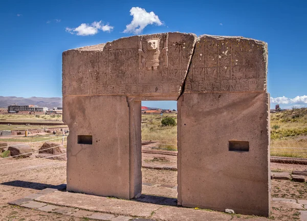
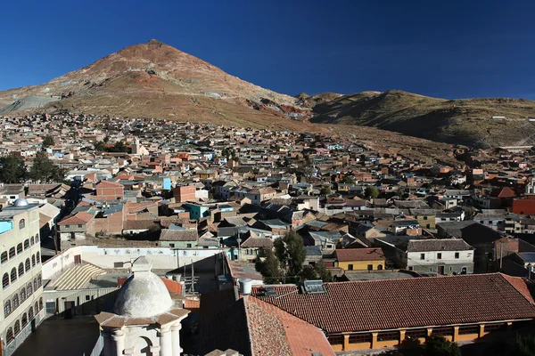
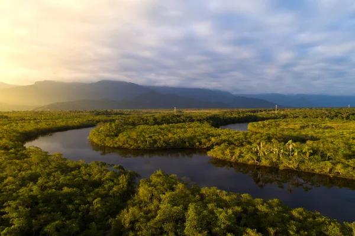
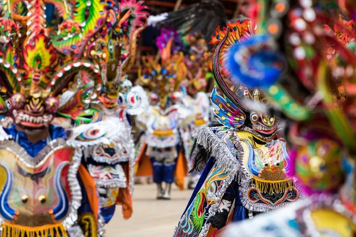
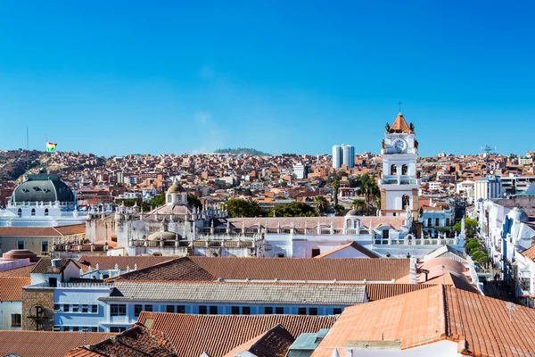
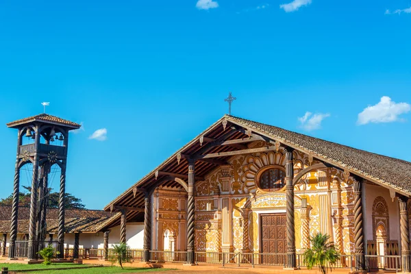
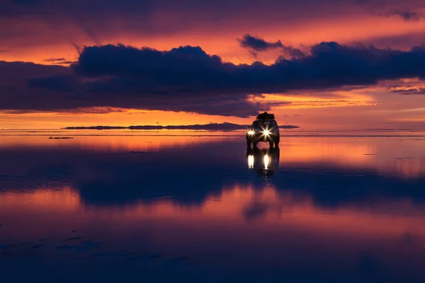

Turismo en Bolivia
En Bolivia.....
El turismo en Bolivia cuenta con variados atractivos turísticos, debido a su diversa cultura, regiones geográficas, rica historia y gastronomía. Patrimonios
Patrimonios de la Humanidad en Bolivia declarados por la Unesco:
- Las ruinas de la ciudad de Tiwanaku, unas de las cunas de la civilización humana, y la más antigua de toda América ya que existió durante 27 siglos
- La ciudad de Potosí, ciudad histórica por sus monumentos religiosos y civiles, sus calles, su gente, sus costumbres y tradiciones únicas, simbiosis de la española y la cultura indígena, de la otrora Metrópolis de la plata y por supuesto, por su majestuoso e imponente Cerro Rico descubierta el año de 1545, hoy convertido en un ícono nacional.
- La Amazonia, el gran pulmón del planeta, santuario de la vida silvestre.
- Las misiones jesuíticas de Chiquitos, las únicas misiones vivas de todas las de Sudamérica
- El Fuerte de Samaipata, la gran roca tallada por los incas en las estribaciones de los Andes como límite de su imperio.
- El Carnaval de Oruro, gran festividad donde se mezcla lo religioso con lo pagano.
- Ciudad histórica de Sucre
- Red caminera del Tahuantinsuyo (Qhapaq Ñan)

Tiwanaku

La Ciudad de Potosí

Amazonia

Carnaval de Oruro

Ciudad historica de Sucre

Las Misiones Jesuíticas
Mejores Destinos
- El Titicaca, el lago navegable más alto del mundo.
- La isla del Sol, lugar sagrado para los incas y lugar de nacimiento de los fundadores del Imperio Inca, Manco Cápac y Mama Ocllo.
- La isla de la Luna, otro lugar sagrado de los incas, cerca de la isla del Sol.
- Copacabana, pequeña ciudad situada a orillas del Titicaca, alberga a la Virgen de Copacabana, reina coronada de Bolivia.
- La cordillera de los Andes, la cadena montañosa más extensa del planeta que atraviesa todo el continente, y presenta regiones de singular atractivo:
- La pista de esquí más alta del mundo, llamada Chacaltaya.
- La montaña más alta del país: el nevado Sajama, con el bosque más alto del mundo.
- Los salares de Uyuni y Coipasa, las mayores planicies de sal del planeta.
- Bolivia es también el único país del mundo en poseer el único hotel fabricado totalmente de sal, que se encuentra en el salar de Uyuni.
- Las lagunas Verde y Colorada, santuario de los flamencos andinos junto a uno de los mayores volcanes activos del planeta, el Licancabur.
- Vista de las huellas de dinosaurio en el Parque Cretácico Cal Orko.
- Las ciudades históricas de:
- Potosí con su Cerro Rico, sus numerosas iglesias bellamente ornamentadas, sus estrechas y pintorescas calles, antiguamente el mayor yacimiento de plata del orbe, es el monumento colonial más importante de Bolivia.
- La Casa de la Moneda es el museo más importante de Bolivia y uno de los más visitados en Sudamérica, conserva en su interior toda la historia colonial y republicana de Potosí y de Bolivia, es considerado como el Escorial americano.
- Hacienda Cayara es la hacienda más antigua de Bolivia, ubicada en una cabecera de valle con un clima templado, en este lugar Bolívar descansó para reflexionar sobre la fundación del nuevo país, conserva todo el complejo de una típica hacienda colonial del siglo XVI, además de otorgar el servicio de hospedaje, puede darse un paseo por el complejo de lácteos y además de apreciar una hermosa caída de agua cerca de la casona.
- Sucre, la capital de los cuatro nombres, en la cual se levantó el primer grito libertario de América, y que es además sede de una de las más antiguas y prestigiosas universidades del continente americano.
- Cal Orcko es un yacimiento paleontológico, hallado
Salar de Uyuni Hostelería
Bolivia se encuentran hospedajes y hoteles de diferentes estrellas en la mayoría de las ciudades grandes del país.
Nombre Ciudad Nombre Ciudad Ritz Apart Hotel La Paz El Rey Palace La Paz El Rey Palace La Paz Río Selva Resort Yungas Coroico Camino Real Santa Cruz Palacio de Sal Uyuni Los Parrales Hotel Resort Tarija Coloso Potosí La Colonia Cochabamba Gran Hotel Cochabamba Cochabamba Hotel Camino Plaza Cochabamba Portales Cochabamba Los Cedros Eco Resort La Guardia Hotel Roles Sucre Mi Pueblo Samary Hotel Boutique Sucre Hotel Cortez Santa Cruz Los Tajibos Santa Cruz Hotel Casa Grande La Paz Sun Hotel Santa Cruz Hotel Atix La Paz Senses Boutique Hotel Santa Cruz Hotel Eden By Bluebay Oruro Bibliografía
- Maravillate con . wikipedia. Editorial.
- Encuentra mucho mas en Turismo_en_Bolivia (Año). boliviaturismo. Revista, Volumen(Número), páginas.
- Sigenos en facebook. boliviaviajesyturismo. Recuperado de URL